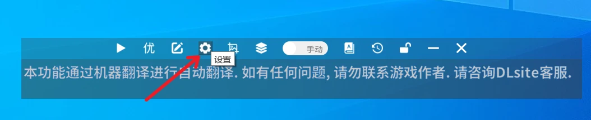
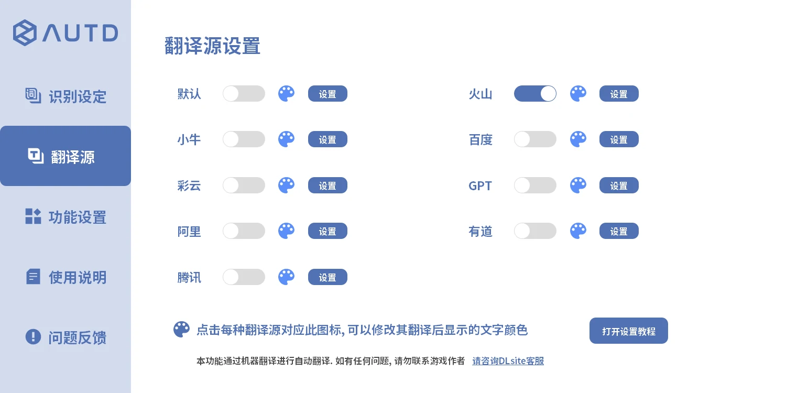
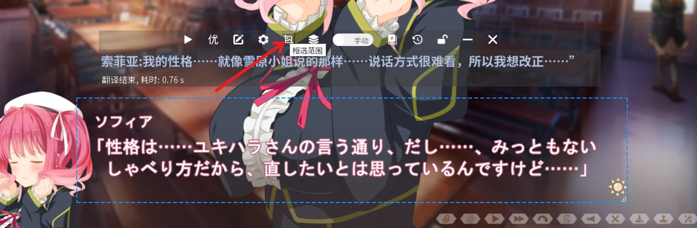
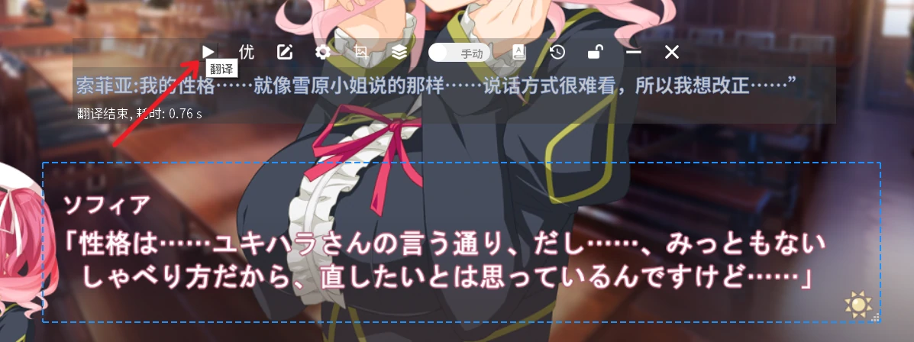

将软件压缩包解压后，双击AutoTranslator.exe即可运行软件
首次启动时会提示需要安装DLsite Nest后才可使用本翻译器，下载并安装该软件后再次重启AUTD翻译器即可
第一次使用时需要打开设置配置一次ocr以及翻译源，此后无需再做更改，设置入口如图所示 
软件内ocr现在提供了在线与离线两种模式
购买方案补充付费时长，具体可查看在线ocr说明选择需要翻译的原文语种，软件目前支持日语和英语
在线翻译源，可同时开启多种翻译源对比进行查看
范围选择按钮，框选出游戏内的文字框，正常情况下选择区域后便会立刻出现翻译内容注意翻译区域不要与翻译器页面重合，可以把翻译器放到翻译区域下方或上方

之后每句话需要手动点击翻译按钮进行翻译
